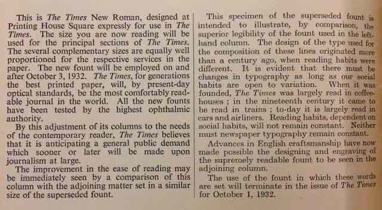

An unfortunate paradox of successful typefaces is that, the more wide their use is, the less noticeable they become. And there is possibly no typeface that this is more true for than Times New Roman.
So how did it reach such ubiquity that it became a icon of the word processing age? And how did it ultimately eventually fall out of fashion?

Times New Roman vs Times Old RomanA example of a font hinted typeface